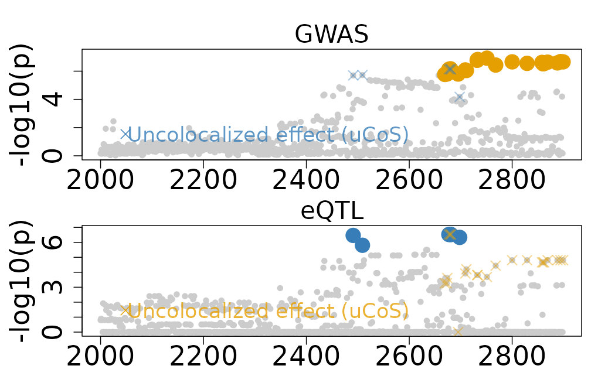
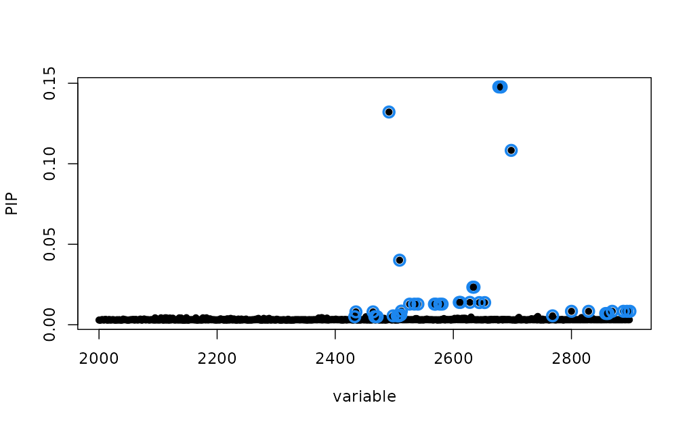
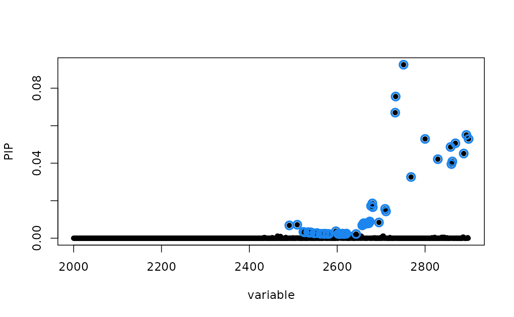

Ambiguous Colocalization from Trait-Specific Effects
Source:vignettes/Ambiguous_Colocalization.Rmd
Ambiguous_Colocalization.RmdThis vignette demonstrates an example of ambiguous colocalization
from trait-specific effects using the colocboost.
Specifically, we will use the Ambiguous_Colocalization,
which is output from colocboost analyzing GTEx release v8
and UK Biobank summary statistics (see more details of the original data
source in Acknowledgment section).
library(colocboost)
# Run colocboost with diagnostic details
data(Ambiguous_Colocalization)
names(Ambiguous_Colocalization)
#> [1] "ColocBoost_Results" "SuSiE_Results" "COLOC_V5_Results"1. The Ambiguous_Colocalization Dataset
The Ambiguous_Colocalization dataset contains results
from a colocboost analysis of a real genomic region showing ambiguous
trait-specific effects between eQTL (expression quantitative trait loci)
and GWAS (genome-wide association study) signals. Ambiguous
colocalization occurs when there appears to be shared causal variants
between traits, but the evidence is complicated by the presence of
trait-specific effects. This ambiguity typically arises when some
trait-specific boosting learners are updating very similar, yet not the
same sets of variants as these traits did not share coupled updates.
This dataset is structured as a list with two main components:
ColocBoost_Results: Contains the output from running the ColocBoost algorithm.SuSiE_Results: Contains fine-mapping results from the SuSiE algorithm for both eQTL and GWAS data separately.COLOC_V5_Results: Contains colocalization results from COLOC, which is directly from twosusieoutput objects.
2. ColocBoost results
In this example, there are two trait-specific effects for the eQTL and GWAS signals, respectively. But two uCoS have overlapping variants, which indicates that the two uCoS are not independent. ColocBoost identifies two uCoS:
-
ucos1:y1: eQTL trait-specific effect has 6 variants. -
ucos2:y2: GWAS trait-specific effect has 22 variants. - There are 3 variants that are overlapping between the two uCoS.
# Trait-specific effects for both eQTL and GWAS
Ambiguous_Colocalization$ColocBoost_Results$ucos_details$ucos$ucos_index
#> $`ucos1:y1`
#> [1] 2491 2677 2680 2681 2698 2509
#>
#> $`ucos2:y2`
#> [1] 2751 2733 2732 2894 2800 2899 2869 2858 2888 2829 2862 2860 2768 2709 2711
#> [16] 2680 2677 2681 2695 2674 2673 2669
# Intersection of eQTL and GWAS variants
Reduce(intersect, Ambiguous_Colocalization$ColocBoost_Results$ucos_details$ucos$ucos_index)
#> [1] 2677 2680 2681After checking the correlation of variants between the two uCoS, we can see the high correlation between the two uCoS.
- The minimum absolute correlation between the two uCoS is 0.636
(off-diagonal
purity$min_abs_corr). - The median absolute correlation between the two uCoS is 0.837
(off-diagonal
purity$median_abs_corr). - The maximum absolute correlation between the two uCoS is 1
(off-diagonal
purity$max_abs_corr), indicating overlapping variants exists.
# With-in and between purity
Ambiguous_Colocalization$ColocBoost_Results$ucos_details$ucos_purity
#> $min_abs_cor
#> ucos1:y1 ucos2:y2
#> ucos1:y1 0.6749485 0.6361986
#> ucos2:y2 0.6361986 0.7048025
#>
#> $max_abs_cor
#> ucos1:y1 ucos2:y2
#> ucos1:y1 0.8599635 1.0000000
#> ucos2:y2 1.0000000 0.8815499
#>
#> $median_abs_cor
#> ucos1:y1 ucos2:y2
#> ucos1:y1 0.8054206 0.8366998
#> ucos2:y2 0.8366998 0.8859317Based on the results, we can see that the two uCoS are not independent, but they are not fully overlapping.
n_variables <- Ambiguous_Colocalization$ColocBoost_Results$data_info$n_variables
colocboost_plot(
Ambiguous_Colocalization$ColocBoost_Results,
plot_cols = 1,
grange = c(2000:n_variables),
plot_ucos = TRUE,
show_cos_to_uncoloc = TRUE
)
#> Warning in get_input_plot(cb_output, plot_cos_idx = plot_cos_idx, variant_coord
#> = variant_coord, : No colocalized effects in this region!
#> Show all CoSs to uncolocalized outcomes.
2. Fine-mapping results from SuSiE and colocalization with COLOC
In this example, we also have fine-mapping results from SuSiE for both eQTL and GWAS data separately.
- For eQTL, SuSiE shows 40 variants in 95% credible set (CS).
- For GWAS, SuSiE shows 57 variants in 95% credible set (CS).
- There are 24 variants are overlapping between the two credible sets.
susie_eQTL <- Ambiguous_Colocalization$SuSiE_Results$eQTL
susie_GWAS <- Ambiguous_Colocalization$SuSiE_Results$GWAS
# Fine-mapped eQTL
susie_eQTL$sets$cs$L1
#> [1] 2433 2435 2464 2467 2471 2491 2498 2505 2508 2509 2511 2512 2526 2534 2540
#> [16] 2568 2570 2577 2581 2610 2612 2628 2633 2635 2644 2653 2677 2680 2681 2698
#> [31] 2768 2800 2829 2858 2860 2862 2869 2888 2894 2899
# Fine-mapped GWAS variants
susie_GWAS$sets$cs$L1
#> [1] 2491 2509 2523 2526 2534 2536 2538 2540 2548 2554 2562 2568 2570 2571 2572
#> [16] 2577 2581 2597 2602 2606 2610 2612 2614 2616 2619 2621 2643 2657 2658 2660
#> [31] 2661 2663 2666 2669 2670 2672 2673 2674 2677 2680 2681 2695 2709 2711 2732
#> [46] 2733 2751 2768 2800 2829 2858 2860 2862 2869 2888 2894 2899
# Intersection of fine-mapped eQTL and GWAS variants
intersect(susie_eQTL$sets$cs$L1, susie_GWAS$sets$cs$L1)
#> [1] 2491 2509 2526 2534 2540 2568 2570 2577 2581 2610 2612 2677 2680 2681 2768
#> [16] 2800 2829 2858 2860 2862 2869 2888 2894 2899To visualize the fine-mapping results,
susieR::susie_plot(susie_eQTL, y = "PIP", pos = 2000:n_variables)
susieR::susie_plot(susie_GWAS, y = "PIP", pos = 2000:n_variables)
We also show the colocalization results from COLOC method. For this ambiguous colocalization, COLOC shows
- A high posterior probability of colocalization (PP.H4) of 0.85.
- Two hits are corresponding to variants with highest PIP in SuSiE for eQTL and GWAS, separately.
Note that SuSiE-based COLOC has a relatively high confidence of this as a colocalization event because each of SuSiE 95% CS as shown above cover substantially larger region (containing more variants) compared to the trait-specific effects identified by ColocBoost, although at a lower purity (SuSiE purity = 0.56 and 0.64, ColocBoost uCoS purity = 0.67 and 0.70). With larger overlap between the SuSiE 95% CS across traits, the high probability of colocalization is expected. But for this particular data application without knowing the ground truth, it is difficult to determine which method is more precise.
# To run COLOC, please use the following command:
# res <- coloc::coloc.susie(susie_eQTL, susie_GWAS)
res <- Ambiguous_Colocalization$COLOC_V5_Results
res$summary
#> nsnps hit1 hit2 PP.H0.abf PP.H1.abf PP.H2.abf
#> 1 2899 chr10:100129660 chr10:100164661 3.022783e-05 0.0009778237 0.004522211
#> PP.H3.abf PP.H4.abf idx1 idx2
#> 1 0.1445868 0.8498829 1 13. Get the ambiguous colocalization results and summary
ColocBoost provides a function to get the ambiguous colocalization results and summary from trait-specific effects, by considering the correlation of variants between the two uCoS.
3.1. Get the ambiguous colocalization results
The get_ambiguous_colocalization function will return
the ambiguous results in ambigous_ucos object, if the
following conditions are met:
- The two uCoS should have at least one overlapping variant.
- The minimum absolute correlation between the two uCoS is greater
than
min_abs_corr_between_ucos(default is 0.5). - The median absolute correlation between the two uCoS is greater than
median_abs_corr_between_ucos(default is 0.8).
colocboost_results <- Ambiguous_Colocalization$ColocBoost_Results
res <- get_ambiguous_colocalization(
colocboost_results,
min_abs_corr_between_ucos = 0.5,
median_abs_corr_between_ucos = 0.8
)
#> There exists the ambiguous colocalization events from trait-specific effects. Extracting!
#> There are 1 ambiguous trait-specific effects.
names(res)
#> [1] "cos_summary" "vcp" "cos_details"
#> [4] "data_info" "model_info" "ucos_details"
#> [7] "diagnostic_details" "ambiguous_cos"
names(res$ambiguous_cos)
#> [1] "ucos1:y1;ucos2:y2"
names(res$ambiguous_cos[[1]])
#> [1] "ambiguous_cos" "ambiguous_cos_overlap" "ambiguous_cos_union"
#> [4] "ambiguous_cos_outcomes" "ambigous_cos_weight" "ambigous_cos_purity"
#> [7] "recalibrated_cos_vcp" "recalibrated_cos"Explanation of results For each ambiguous colocalization, the following information is provided:
-
ambiguous_cos: Contains variants indices and names of the original trait-specific uCoS used to construct this ambiguous colocalization. -
ambiguous_cos_overlap: Contains the overlapping variants information across the uCoS used to construct this ambiguous colocalization. -
ambiguous_cos_union: Contains the union of variants information across the uCoS used to construct this ambiguous colocalization. -
ambiguous_cos_outcomes: Contains the outcomes indices and names for uCoS used to construct this ambiguous colocalization. -
ambiguous_cos_weight: Contains the trait-specific weights of the uCoS used to construct this ambiguous colocalization. -
ambiguous_cos_puriry: Contains the purity of across uCoS used to construct this ambiguous colocalization. -
recalibrated_cos_vcp: Contains the recalibrated integrative weight to analogous to variant colocalization probability (VCP) from the ambiguous colocalization results. -
recalibrated_cos: Contains the recalibrated 95% colocalization confidence set (CoS) from the ambiguous colocalization results.
3.2. Get the summary of ambiguous colocalization results
To get the summary of ambiguous colocalization results, we can use
the get_colocboost_summary function.
-
summary_level = 1(default): get the summary table for only the colocalization results, same ascos_summaryin ColocBoost output. -
summary_level = 2: get the summary table for both colocalization and trait-specific effects if exists. -
summary_level = 3: get the summary table for colocalization, trait-specific effects and ambiguous colocalization results if exists.
# Get the full summary results from colocboost
full_summary <- get_colocboost_summary(colocboost_results, summary_level = 3)
#> There exists the ambiguous colocalization events from trait-specific effects. Extracting!
#> There are 1 ambiguous trait-specific effects.
names(full_summary)
#> [1] "cos_summary" "ucos_summary" "ambiguous_cos_summary"
# Get the summary of ambiguous colocalization results
summary_ambiguous <- full_summary$ambiguous_cos_summary
colnames(summary_ambiguous)
#> [1] "outcomes" "ucos_id"
#> [3] "min_between_purity" "median_between_purity"
#> [5] "overlap_idx" "overlap_variables"
#> [7] "n_recalibrated_variables" "recalibrated_index"
#> [9] "recalibrated_variables" "recalibrated_variables_vcp"-
recalibrated_*: giving the recalibrated weights and recalibrated 95% colocalization confidence sets (CoS) from the trait-specific effects.
See details of function usage in the Functions.
4. Take home message
In this vignette, we have demonstrated how post-processing of ColocBoost results may be use to reconciliate ambiguous colocalization scenarios where trait-specific effects share highly correlated and overlapping variants.
- Through simulation studies, we have found that the minimum absolute
correlation cutoff of 0.5 and median absolute correlation cutoff of 0.8
produce reasonable results when merging two uCoS, which in this example
will furnish a colocalization event. Still, we mark such colocalization
events as
ambigous_cos. We recommend users not to lower these thresholds further without strong justification. - We suggest treating this scenario with caution and distinct such merged CoS from typical colocalization events as a result of coupled updates between traits, if researcher decides to investigate these ambiguous colocalization events.
- As such,
- While we provide recalibrated weights as a suggested approach for interpreting ambiguous results, users can still choose between recalibrated weights and trait-specific weights based on their research context.
- The
colocboost_plotfunction will not consider it as colocalized but still showing them as uncolocalized events, with overlapping variants color labeled.
Acknowledgment
- The eQTL data used for the analyses described in this example results were obtained from GTEx release v8 from GTEx Portal.
- The GWAS summary statistics used for the analyses described in this example results were obtained from UK Biobank (UKBB) from UK Biobank and downloaded from Nealelab.